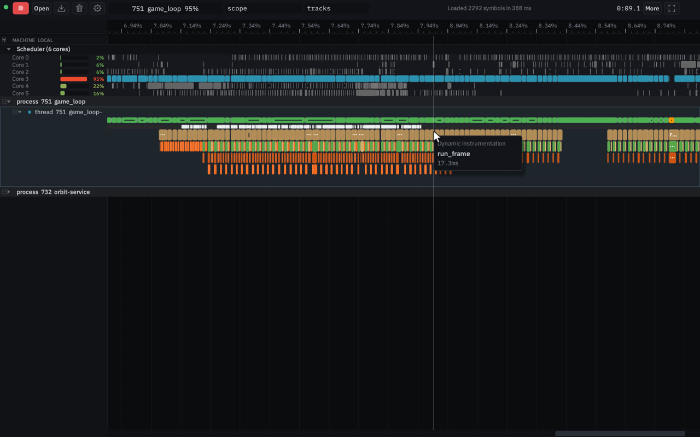
Hit Record, and the timeline starts
Pick the process, switch hooks to uprobes and turn on auto profile, then hit Record. The timeline streams live and the capture timer ticks.
Native profiler
Orbit is a low-overhead profiler for native code. It instruments a process with uprobes, samples call stacks at 1 kHz, and streams the capture to a browser.
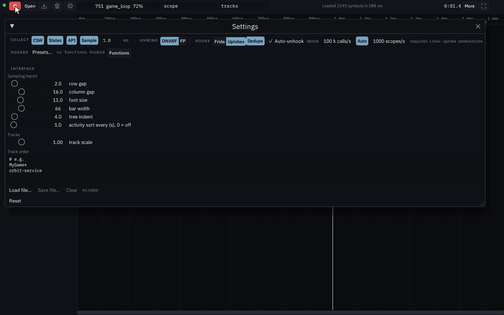
Attach to a process that is already running. The service decides which functions to hook.

Pick the process, switch hooks to uprobes and turn on auto profile, then hit Record. The timeline streams live and the capture timer ticks.
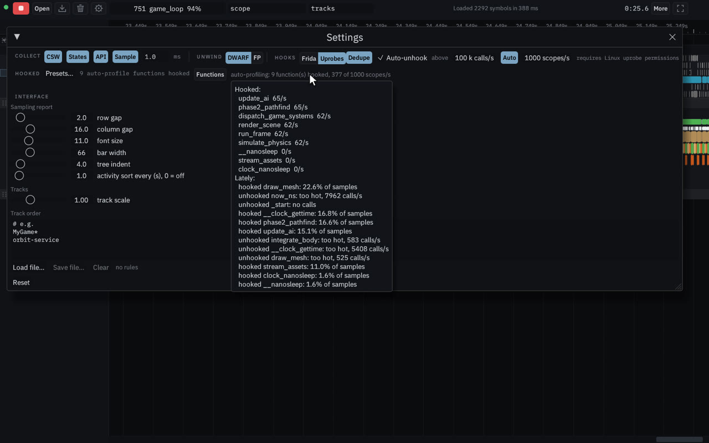
Auto-profiling chooses functions from the samples. The status line counts hooked functions and scopes per second against the budget until the set converges, and the Functions view lists what was hooked.
Move through a live capture, and light up a scope by name.
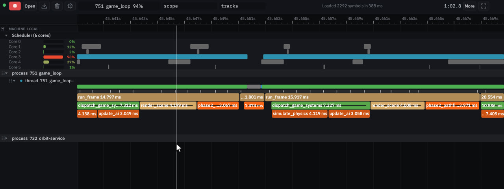
Ctrl+wheel zooms around the cursor, drag pans, and W, S, A and D do the same from the keyboard. Hover a scope for a tooltip on the nested hooked functions.
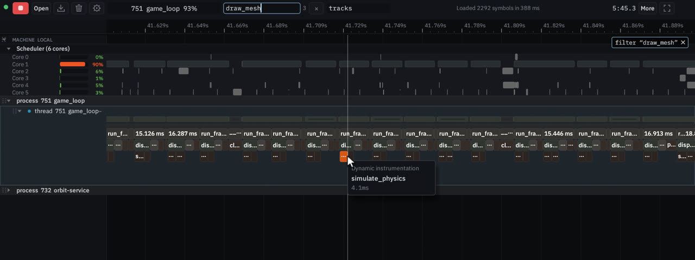
Typing in the scope search box leaves every matching scope lit and greys out the rest. Escape clears the search.
From a sampling flame graph down to the instructions in the running binary.
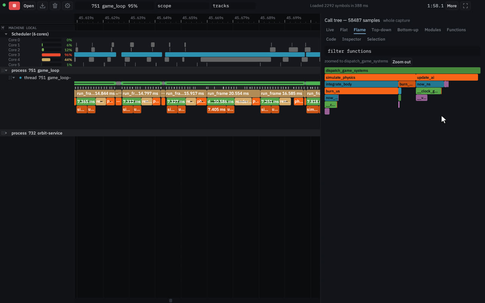
The sampling flame graph names the frames. Click a frame to highlight that function on the timeline. Double-click to zoom into its subtree.
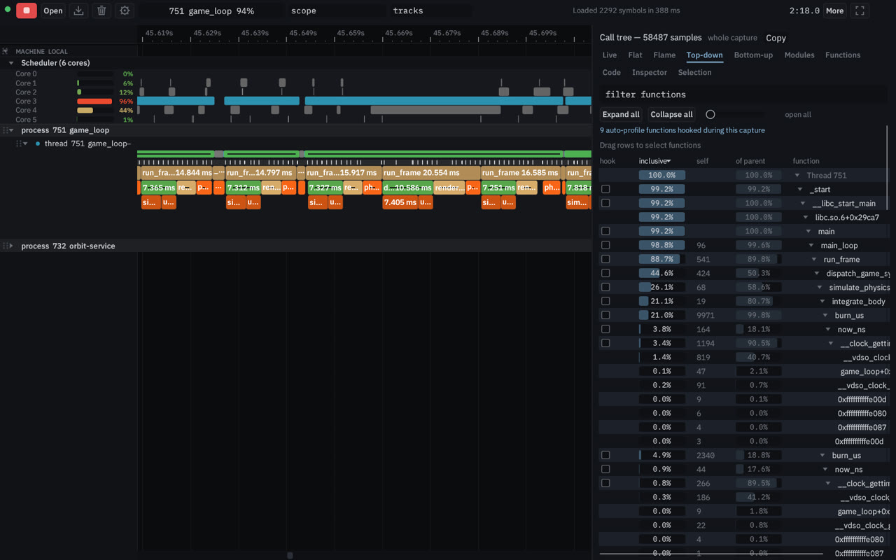
The top-down tree shows inclusive, self and of-parent percentages — run_frame at about 88% inclusive — and can collapse or expand all. The bottom-up tree walks from the hottest leaves back to their callers.
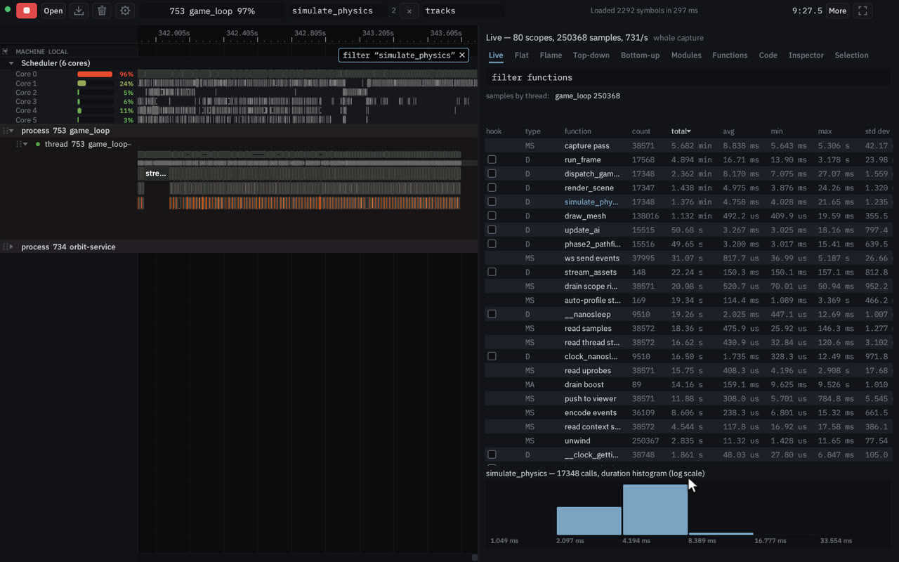
The Live table updates as events stream in: count, total, average, min, max and standard deviation for each scope. Click a row, such as simulate_physics, for its duration histogram and a highlight on the timeline.
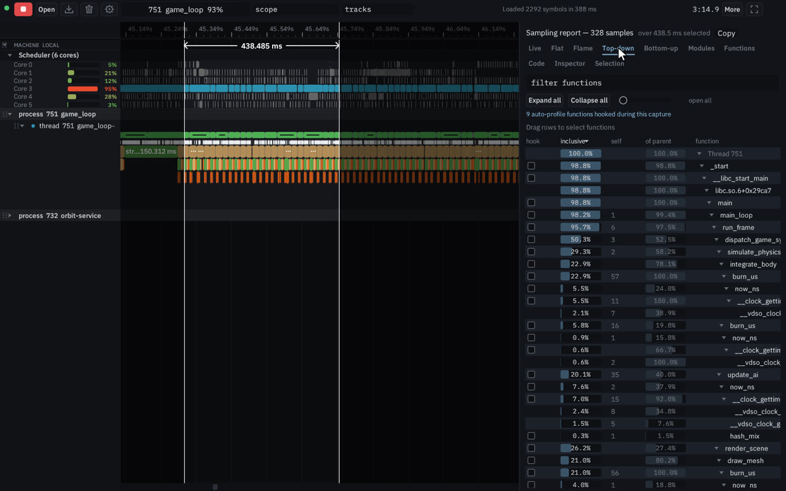
Right-drag selects a time range across every thread, and the flame graph and top-down tree recompute for that window. Left-drag on a thread’s sample bar limits the report to that thread.
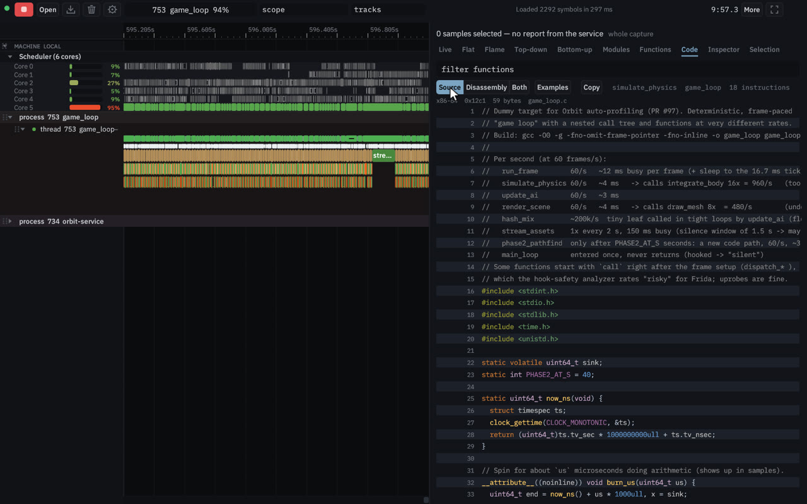
Right-click a function and open disassembly and source. The service disassembles it from the running binary and interleaves the source lines. Switch among Source, Disassembly and Both.
Where the thread ran, and what the profiler itself is doing.
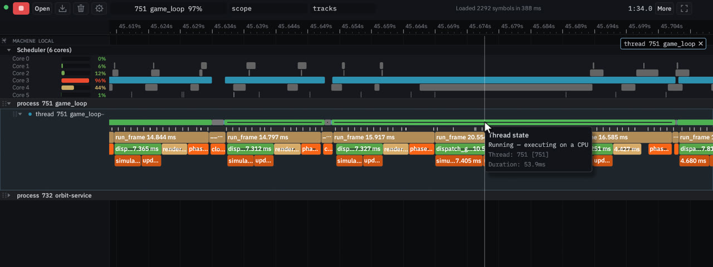
The scheduler track shows the process’s slices on each core, with a tooltip on a slice. Click a thread to focus it — the others grey out — and the thread-state strip shows Running and Sleeping.
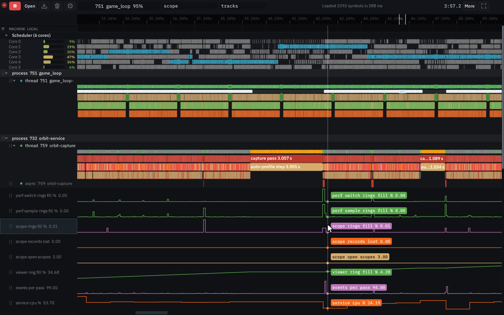
orbit-service instruments itself. CPU percent, RSS, events per pass and the ring lanes sit with its own scopes, and a cursor line reads them across the capture.
The same capture, in another colour scheme, on a phone, or from a Chrome trace.
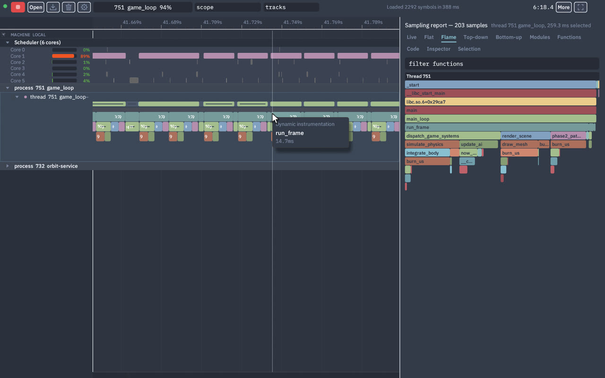
More, then Color scheme, changes the viewer, the timeline and the flame graph together. The recording shows Dracula, Solarized Light and Nord.
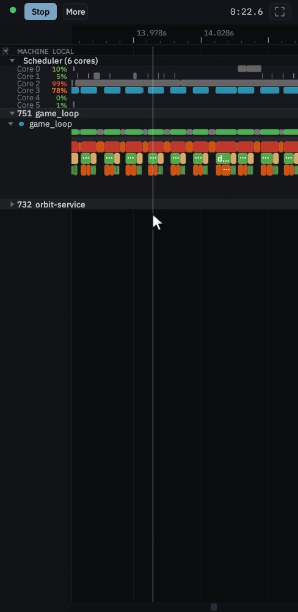
At 390 pixels wide the layout tightens: zoom and pan the timeline, then open the report panel and its flame graph.
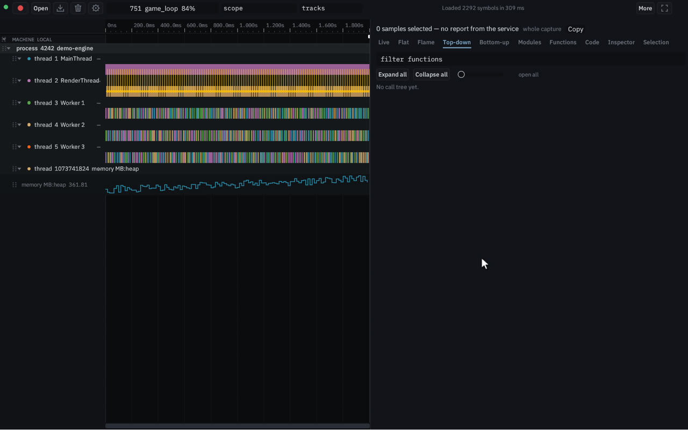
Open a Chrome Trace Event JSON file — Perfetto traces too. Processes, threads, nested slices, counters and flows land on the same timeline.
A service captures the target. A live stream carries it to the viewer.
Target process
A native binary. Orbit does not rebuild it and does not relaunch it.
orbit-service
Dynamic instrumentation through uprobes, call stacks at 1 kHz, and scheduler, context-switch and thread-state tracks. Auto-profile picks what to hook and prunes it to a scopes-per-second budget.
Web viewer
A Rust and WASM page (egui, wgpu). Timeline, flame graph, call trees, live table, selection reports, and disassembly next to source.
A saved capture, opened in the page. Nothing is running behind it.
Drag to pan · wheel over the ruler to zoom · click a thread · right-click a scope · Home to fit Open it on its own
{{facts}}
One static binary serves the viewer and the API. The manual covers privileges, capture files and instrumentation.
# install (Linux / macOS)
curl -fsSL https://orbitprofiler.dev/install.sh | sh
orbit-service --serve 44766
# http://127.0.0.1:44766/Sampling needs perf_event_paranoid at −1 or CAP_PERFMON. Uprobe instrumentation needs CAP_SYS_ADMIN.
Linux on x86-64 and arm64 today, as one static binary. The viewer runs wherever there is a browser, and a saved capture opens as a file, like the one above.
Manual instrumentation — one header, Rust, C, C++ and Python — is in the manual, alongside the HTTP API.
Read the manualSite built {{date}} at commit {{commit}}. Recordings are of the live viewer at da8aa05c, profiling game_loop. The embedded capture is a .orbit.stream.